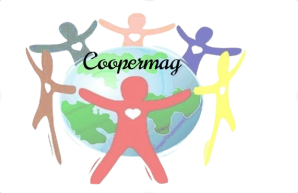

Cooperativa Cooarla
📍 Canoas, Bairro- Guajuviras 14, Rua Bela Vista, - RS CNPJ 11480776000172
HUB Pró-Reciclagem é parte integrante do Tecnosocial Unilasalle, o qual é composto pela Incubadora de Empreendimentos Solidários Unilasalle que trabalha desde 2003 com catadores de materiais recicláveis da cidade de Canoas e região. objetivo do HUB Pró-Reciclagem é promover um ambiente para compartilhamento de ações sociais realizadas pela Universidade La Salle e outras instituições em prol das comunidades reúne informações e ferramentas para facilitar a reciclagem e a educação ambiental. Aqui você encontra orientações sobre o que pode ser reciclado, cooperativas, mapa da coleta, calculadora da reciclagem, materiais educativos e notícias.


Conectamos pessoas
e comunidades
Promovemos ações
sustentáveis
Transformamos
realidades
Incentivamos a
educação ambiental
📍 Canoas, Bairro- Guajuviras 14, Rua Bela Vista, - RS CNPJ 11480776000172

📍 Canoas - RS Rua Dom Pedrito 800/Mathias velho CNPJ:06.229.080/0001-38

📍 Canoas - RS Rua Maria Elizabeth Finkler CNPJ:13502010000/77

📍 Canoas - RS Rua Washington Luiz, 165 - Niteró CNPJ:16646801000169

📍 Canoas - RS Rua Primavera 198 - Rio Branco CNPJ:17681134000118

📍 Canoas - RS Rua Edy Frederico Link, 85 - Fátima CNPJ: 19502991000139

📍 Canoas - RS Rua Engenheiro Kindler, 1261 - Harmonia CBPJ: 43590573000125

📍 Canoas - Estrada do Nazario, 3303 CNPJ:13577932000143
Encontre informações, dicas e ferramentas para aprender mais sobre reciclagem, sustentabilidade e educação ambiental.
Descubra quais materiais podem ser encaminhados para a reciclagem e faça parte dessa transformação!
Saiba mais →Informação que transforma e atitudes que fazem a diferença. Encontre conteúdos e dicas para um planeta mais sustentável.
Saiba mais →Você sabia que as cooperativas desempenham um triplo papel: ambiental, social e econômico?
Conheça mais →Calcule como a reciclagem pode contribuir para reduzir resíduos e economizar recursos naturais.
Calcular agora →Saiba como limpar e separar corretamente os materiais antes de destiná-los para a reciclagem.
Saiba mais →Quais materiais podem ser reciclados? Conheça mais sobre cada um!
Conhecer materiais →Confira dicas simples e práticas para incorporar a sustentabilidade à sua rotina.
Ver dicas →Conheça o trabalho das cooperativas e descubra como elas contribuem para a reciclagem e geração de renda.
Conhecer mais →Clique em cada material para saber mais sobre como reciclar corretamente.
Caixas, jornais, revistas, folhas e embalagens de papel.
Latas de alumínio, latas de aço e outros materiais metálicos.
Garrafas, potes e frascos de vidro, quando destinados corretamente.
Garrafas PET, embalagens, potes e diversos outros tipos de plástico.
Equipamentos e componentes eletrônicos que devem ser encaminhados para sistemas específicos.
A reciclagem começa com atitudes simples. Separar corretamente, limpar os materiais e destiná-los ao local adequado ajuda a reduzir resíduos e contribui para um futuro mais sustentável.
Aprenda como fazer →Em Canoas, a coleta seletiva conta com a atuação de cooperativas de reciclagem, que desempenham um papel importante na triagem e no encaminhamento dos materiais recicláveis.
Conheça o trabalho das cooperativas →